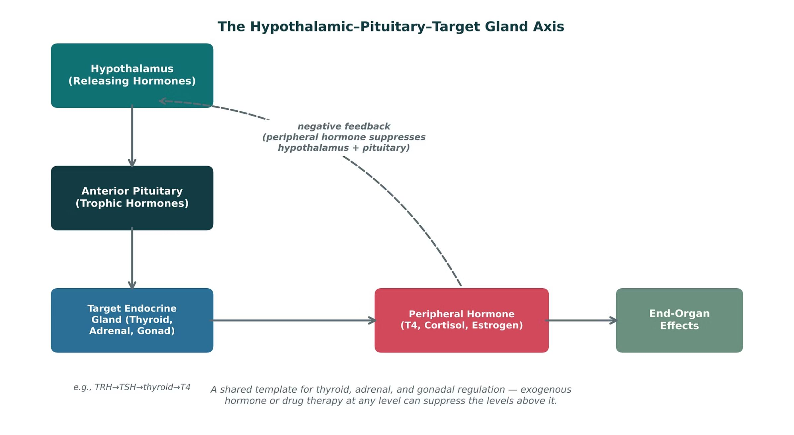
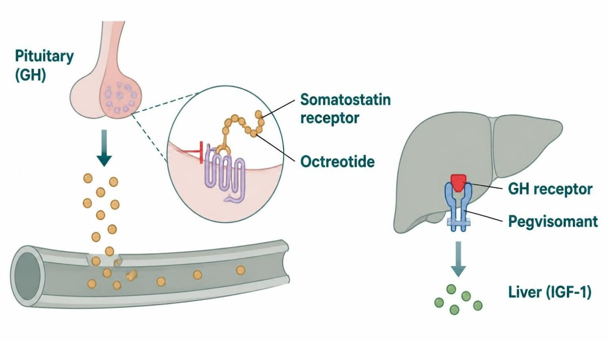
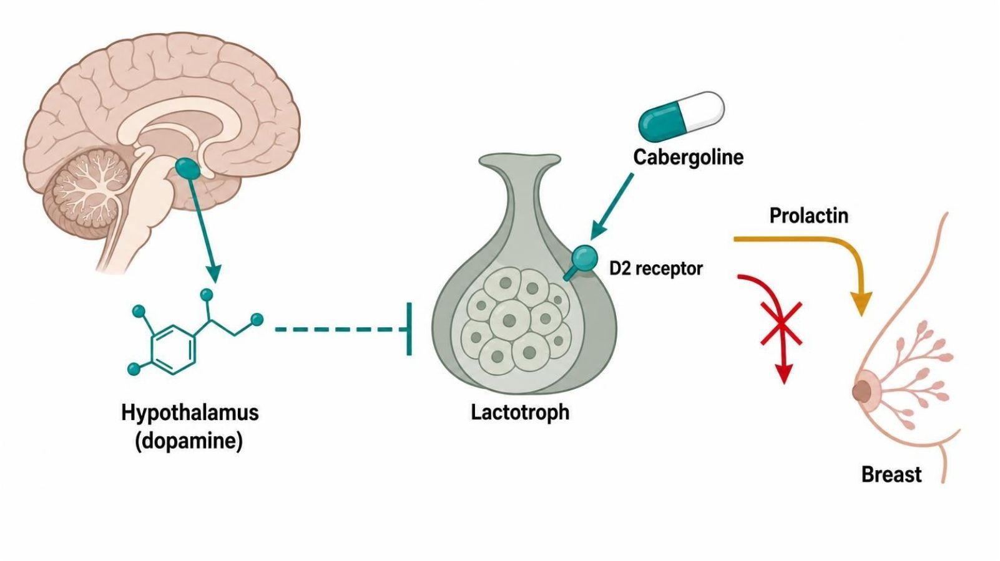
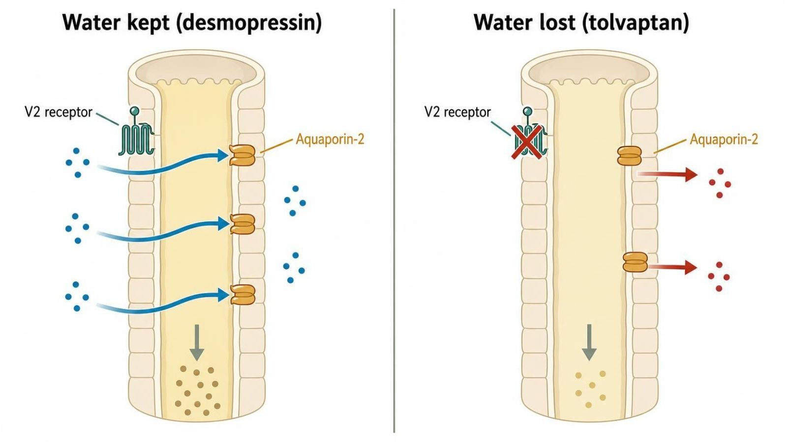
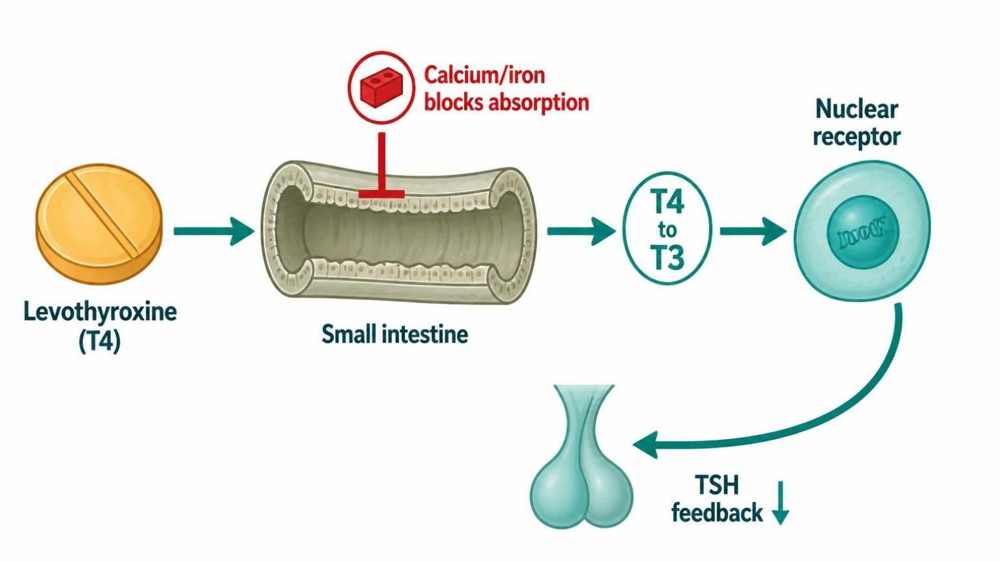
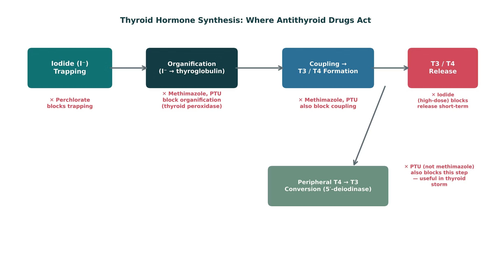
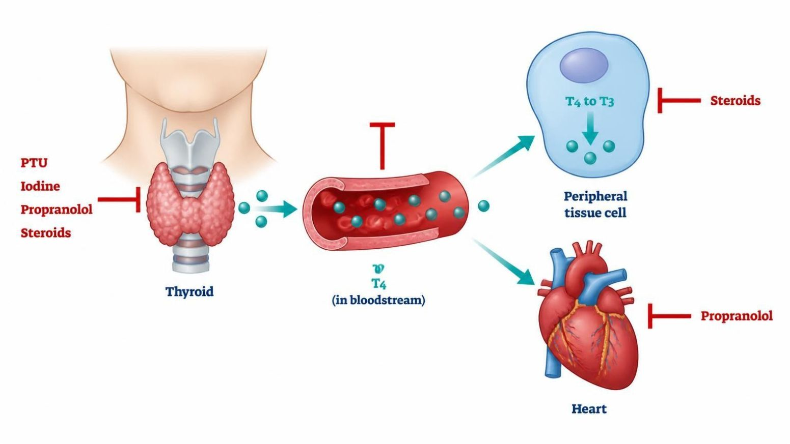
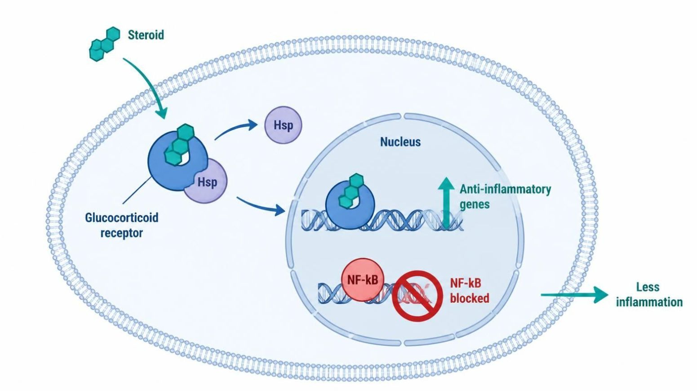
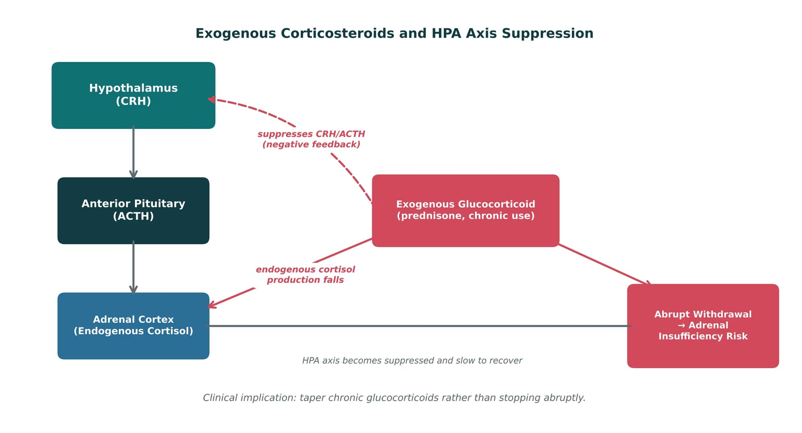
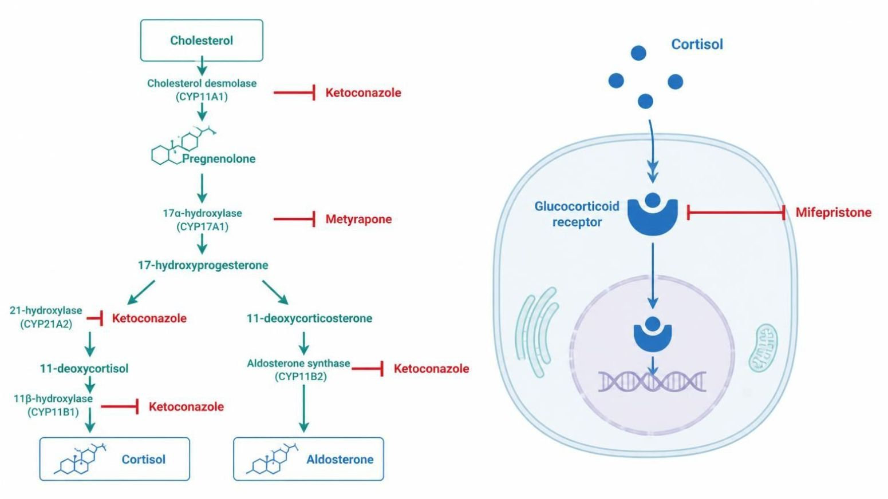

Unit 4 · Session 1 · Tue, Nov 10, 2026
3 parts · every fact cited to its slide or textbook page. About 120 minutes of focused study.
IO = syllabus unit objective · SO = this session's objectives slide.
| ID | Objective | Covered in |
|---|---|---|
| IO4.1 | Identify major pharmacologic classes used in the management of endocrine conditions and describe their mechanisms of action. | Part 1 · Pituitary: GH, Prolactin & ADH Part 2 · Thyroid & Antithyroid Drugs Part 3 · Adrenocorticosteroids & Antagonists |
| IO4.2 | Describe the indications, contraindications, adverse effects, and clinically significant interactions associated with medications used to treat endocrine conditions. | Part 1 · Pituitary: GH, Prolactin & ADH Part 2 · Thyroid & Antithyroid Drugs Part 3 · Adrenocorticosteroids & Antagonists |
| IO4.3 | Compare pharmacologic agents within and across therapeutic classes to distinguish clinically relevant differences in efficacy, safety, and use. | Part 2 · Thyroid & Antithyroid Drugs Part 3 · Adrenocorticosteroids & Antagonists |
| IO4.4 | Select appropriate pharmacologic therapy for common endocrine conditions based on clinical presentation and patient-specific factors. | Part 1 · Pituitary: GH, Prolactin & ADH Part 2 · Thyroid & Antithyroid Drugs Part 3 · Adrenocorticosteroids & Antagonists |
| IO4.5 | Identify appropriate dosing, administration, and monitoring considerations for medications used in endocrine conditions. | Part 1 · Pituitary: GH, Prolactin & ADH Part 2 · Thyroid & Antithyroid Drugs Part 3 · Adrenocorticosteroids & Antagonists |
| IO4.6 | Explain important medication-use and safety information to patients receiving pharmacotherapy for endocrine conditions. | Part 2 · Thyroid & Antithyroid Drugs Part 3 · Adrenocorticosteroids & Antagonists |
| SO1 | Describe the hypothalamic-pituitary-target gland axis as a shared regulatory template, and identify where drug therapy intervenes at each level. | Part 1 · Pituitary: GH, Prolactin & ADH |
| SO2 | Identify the major agents used for growth hormone disorders, hyperprolactinemia, and disorders of antidiuretic hormone (diabetes insipidus, SIADH). | Part 1 · Pituitary: GH, Prolactin & ADH |
| SO3 | Describe the mechanisms, indications, and monitoring of thyroid hormone replacement and antithyroid drug therapy, including management of thyroid storm. | Part 2 · Thyroid & Antithyroid Drugs |
| SO4 | Compare glucocorticoid and mineralocorticoid pharmacology, and identify agents used to block adrenocortical hormone synthesis or action. | Part 3 · Adrenocorticosteroids & Antagonists |
| SO5 | Identify dosing, administration, and monitoring considerations, and explain key medication-safety counseling points to patients, including HPA-axis suppression and the need to taper chronic glucocorticoids. | Part 2 · Thyroid & Antithyroid Drugs Part 3 · Adrenocorticosteroids & Antagonists |
Not covered in materials




| Diabetes insipidus | SIADH | |
|---|---|---|
| Problem | ADH deficiency/resistance — water lost | ADH excess — water retained |
| Drug | Desmopressin (central DI) | Fluid restriction; tolvaptan or demeclocycline if refractory |
| Watch for | Hyponatremia — limit fluids | Overcorrection (osmotic demyelination); liver injury; photosensitivity |
How to tell them apart. Sources: S8; S10; SG U4-R4
| Drug | Class | Formulation | Adult dose | Indications |
|---|---|---|---|---|
| Somatropin (Genotropin, Norditropin) | Recombinant human growth hormone | SC injection pens and cartridges (several mg strengths) | Adults: start about 0.2 mg SC daily and titrate by IGF-1; children: weight-based daily SC dosing | GH deficiency (children and adults), Turner syndrome, other growth disorders |
| Octreotide (Sandostatin) | Somatostatin analog | SC injection 50/100/500 mcg/mL; LAR depot IM 10/20/30 mg; oral capsule | Acromegaly: 50 mcg SC TID, titrate to 100-200 mcg TID; LAR 20 mg IM every 4 weeks | Acromegaly, carcinoid syndrome, VIPoma, esophageal variceal bleeding |
| Lanreotide (Somatuline Depot) | Somatostatin analog | Deep SC injection 60/90/120 mg prefilled syringe | 90 mg deep SC every 4 weeks for 3 months, then adjust between 60 and 120 mg | Acromegaly, neuroendocrine tumors, carcinoid syndrome |
| Pegvisomant (Somavert) | GH receptor antagonist | SC injection vials 10/15/20/25/30 mg | Load 40 mg SC, then 10 mg SC daily, titrate by IGF-1 (max 30 mg/day) | Acromegaly not controlled by surgery or somatostatin analogs |
How to tell them apart. Sources: S30; S31; S32; S33
| Drug | Adverse effects | Contraindications | Toxicity / overdose |
|---|---|---|---|
| Somatropin (Genotropin, Norditropin) | Injection-site reaction, edema, joint pain, headache, hyperglycemia | Active malignancy, closed epiphyses (for growth promotion), acute critical illness | Fluid retention, glucose intolerance, intracranial hypertension, slipped capital femoral epiphysis; titrate by IGF-1 |
| Octreotide (Sandostatin) | GI upset, diarrhea, gallstones, bradycardia, glucose changes | Hypersensitivity | Gallstones, hypo- or hyperglycemia, bradycardia and conduction block; monitor IGF-1, glucose, gallbladder |
| Lanreotide (Somatuline Depot) | Diarrhea, abdominal pain, gallstones, injection-site reaction, bradycardia | Hypersensitivity | Gallstones, glucose dysregulation, bradycardia; monitor GH and IGF-1 |
| Pegvisomant (Somavert) | Injection-site reaction, headache, raised liver enzymes, flu-like symptoms | Hypersensitivity | Liver injury; monitor tumor size by MRI; GH levels rise and are not used for monitoring |
How to tell them apart. Sources: S30; S31; S32; S33
| Drug | Class | Formulation | Adult dose | Indications |
|---|---|---|---|---|
| Cabergoline (Dostinex) | Dopamine D2 agonist (ergot-derived) | Tablet 0.5 mg | 0.25 mg PO twice weekly, increase by 0.25 mg every 4 weeks to usual max 1 mg twice weekly | Hyperprolactinemia, prolactinoma |
| Bromocriptine (Parlodel, Cycloset) | Dopamine D2 agonist (ergot-derived) | Tablet 2.5 mg; capsule 5 mg; Cycloset 0.8 mg tablet | 1.25-2.5 mg PO at bedtime, titrate to 2.5 mg BID-TID for prolactinoma (max 15 mg/day) | Hyperprolactinemia, acromegaly (adjunct), Parkinson disease, type 2 diabetes (Cycloset) |
| Desmopressin (DDAVP) | Synthetic vasopressin V2 agonist | Tablet 0.1/0.2 mg; nasal spray; SC/IV 4 mcg/mL; ODT 60 mcg | Central DI: 0.05-0.2 mg PO BID, or 10-40 mcg intranasal daily in divided doses; titrate to urine output | Central diabetes insipidus, nocturnal enuresis, hemophilia A and von Willebrand disease (IV) |
| Tolvaptan (Samsca) | Vasopressin V2 receptor antagonist | Tablet 15/30 mg | 15 mg PO once daily, titrate to 30-60 mg; start in hospital | Hyponatremia from SIADH or heart failure |
| Demeclocycline | Tetracycline with ADH-antagonist effect | Tablet 150/300 mg | 150-300 mg PO 3-4 times daily for SIADH (off-label) | Refractory SIADH (off-label), bacterial infections |
How to tell them apart. Sources: S34; S35; S36; S37; S38
| Drug | Adverse effects | Contraindications | Toxicity / overdose |
|---|---|---|---|
| Cabergoline (Dostinex) | Nausea, dizziness, headache, orthostatic hypotension | Uncontrolled hypertension, cardiac valvulopathy, ergot hypersensitivity | Cardiac valve fibrosis at high doses; impulse-control and psychiatric effects; overdose causes hypotension and nausea |
| Bromocriptine (Parlodel, Cycloset) | Nausea, orthostatic hypotension, dizziness, headache, nasal congestion | Uncontrolled hypertension, pregnancy-related hypertension, ergot hypersensitivity | Hypotension and syncope, psychosis, fibrosis with long-term high doses; take with food |
| Desmopressin (DDAVP) | Headache, nausea, flushing, hyponatremia | Hyponatremia history, polydipsia, eGFR below 50, heart failure | Water intoxication with severe hyponatremia and seizures; limit fluids and monitor sodium |
| Tolvaptan (Samsca) | Thirst, dry mouth, polyuria, hypernatremia, liver injury | Urgent need to raise sodium, hypovolemia, anuria, strong CYP3A4 inhibitors | Overly rapid sodium correction (osmotic demyelination); liver injury; limit therapy to 30 days |
| Demeclocycline | Photosensitivity, nausea, nephrogenic diabetes insipidus | Pregnancy, children under 8 years, hypersensitivity, severe renal impairment | Nephrotoxicity, photosensitivity, tooth discoloration; separate from calcium and antacids |
How to tell them apart. Sources: S34; S35; S36; S37; S38



| Methimazole | Propylthiouracil (PTU) | |
|---|---|---|
| Use | First-line for most non-pregnant patients; once daily | First trimester of pregnancy; thyroid storm |
| Extra action | — | Also blocks peripheral T4→T3 conversion |
| Pregnancy | Avoid in first trimester (teratogenic) | Preferred in first trimester |
| Boxed warning | Agranulocytosis, hepatotoxicity | Severe hepatotoxicity (more than methimazole) |
How to tell them apart. Sources: S15; SG U4-R6
| Drug | Class | Formulation | Adult dose | Indications |
|---|---|---|---|---|
| Levothyroxine (Synthroid, Levoxyl) | Synthetic thyroid hormone (T4) | Tablet 25-300 mcg (12 strengths); IV 100-500 mcg vial; liquid and capsule | Full replacement about 1.6 mcg/kg/day PO; start 12.5-50 mcg in older adults or heart disease; recheck TSH in 6-8 weeks | Hypothyroidism, myxedema coma (IV), TSH suppression in thyroid cancer |
| Methimazole (Tapazole) | Thionamide antithyroid drug | Tablet 5/10 mg | Graves disease: start 10-30 mg PO once daily; adjust to free T4 every 4-6 weeks | Graves disease, toxic nodular goiter, pre-operative control |
| Propylthiouracil (PTU) | Thionamide antithyroid drug (also blocks T4 to T3) | Tablet 50 mg | Start 100 mg PO TID (up to 300-400 mg/day); thyroid storm: 500-1,000 mg load, then 250 mg every 4 hours | First-trimester Graves disease, thyroid storm, methimazole intolerance |
| Propranolol (Inderal) | Nonselective beta-blocker | Tablet 10/20/40/60/80 mg; ER capsule; IV 1 mg/mL | Thyrotoxic symptoms: 20-40 mg PO every 6-8 hours; thyroid storm: 60-80 mg PO every 4 hours or 0.5-1 mg IV | Thyrotoxic symptoms, thyroid storm, hypertension, tremor |
| Potassium iodide (SSKI, Lugol solution) | Iodine (blocks hormone release) | SSKI 1 g/mL solution; Lugol 5% solution; tablets 65/130 mg | Thyroid storm: 5 drops (about 250 mg) SSKI PO every 6 hours, at least 1 hour after a thionamide | Thyroid storm, pre-thyroidectomy preparation, radiation protection |
How to tell them apart. Sources: S39; S40; S41; S42; S43
| Drug | Adverse effects | Contraindications | Toxicity / overdose |
|---|---|---|---|
| Levothyroxine (Synthroid, Levoxyl) | Usually none at the right dose; over-replacement causes tachycardia, tremor, insomnia, bone loss | Uncorrected adrenal insufficiency, acute MI, hypersensitivity | Over-replacement: atrial fibrillation, angina, osteoporosis; separate from calcium, iron and antacids by 4 hours |
| Methimazole (Tapazole) | Rash, itching, joint pain, taste change; agranulocytosis (rare) | First trimester of pregnancy; prior methimazole agranulocytosis | Agranulocytosis (fever or sore throat: stop and check CBC), hepatotoxicity, teratogenicity |
| Propylthiouracil (PTU) | Rash, nausea, taste change, joint pain | Prior PTU liver injury; avoid in children | Boxed warning: severe liver failure; agranulocytosis; ANCA-positive vasculitis |
| Propranolol (Inderal) | Bradycardia, fatigue, bronchospasm, masks hypoglycemia | Asthma, decompensated heart failure, high-grade AV block, severe bradycardia | Bradycardia, hypotension, bronchospasm; avoid abrupt stopping; may mask hypoglycemia |
| Potassium iodide (SSKI, Lugol solution) | Metallic taste, GI upset, salivary gland swelling, rash | Giving before a thionamide; iodine allergy | Iodism (rash, swelling, fever); thyroid escape after about 10 days; hypo- or hyperthyroidism |
How to tell them apart. Sources: S39; S40; S41; S42; S43
Not covered in materials



| Glucocorticoids (prednisone, dexamethasone) | Mineralocorticoids (fludrocortisone) | |
|---|---|---|
| Main effect | Anti-inflammatory, immunosuppressive | Renal sodium retention, potassium excretion |
| Use | Inflammatory/autoimmune disease in nearly every organ system | Addison disease replacement, with a glucocorticoid |
| Monitor | Glucose, bone, infection, mood; taper chronic use | Blood pressure and potassium |
How to tell them apart. Sources: S20
| Agent | Category | Key teaching point |
|---|---|---|
| Prednisone, dexamethasone | Glucocorticoid | Anti-inflammatory; chronic use risks HPA suppression — taper, don’t stop abruptly |
| Fludrocortisone | Mineralocorticoid | Sodium retention/potassium excretion; replacement in Addison disease |
| Ketoconazole, metyrapone | Steroidogenesis inhibitor | Block cortisol synthesis at different steps; used in Cushing syndrome |
| Mifepristone | Glucocorticoid-receptor antagonist | Hyperglycemia in Cushing syndrome when surgery isn’t an option |
How to tell them apart. Sources: S25; S25 (notes)
| Drug(s) | Why it matters here |
|---|---|
| Antipsychotics and metoclopramide | Raise prolactin by blocking dopamine |
| Calcium, iron and antacids | Block levothyroxine absorption; separate by 4 hours |
| Amiodarone and lithium | Can cause hypo- or hyperthyroidism |
| Estrogens | Raise thyroid-binding globulin, so levothyroxine needs rise |
| Rifampin, phenytoin, carbamazepine | Speed clearance of levothyroxine and steroids |
| Azole antifungals | Raise corticosteroid exposure through CYP3A4 |
| ACE inhibitors, ARBs and potassium | Add to spironolactone hyperkalemia |
| Insulin and oral agents | Doses need adjusting during steroid therapy |
How to tell them apart. Sources: S52; S52 (notes)
| Drug | Class | Formulation | Adult dose | Indications |
|---|---|---|---|---|
| Prednisone | Glucocorticoid (prodrug of prednisolone) | Tablet 1/2.5/5/10/20/50 mg; oral solution | 5-60 mg PO daily depending on indication; taper after more than 3 weeks of therapy | Inflammatory and autoimmune disease, allergic reactions |
| Dexamethasone (Decadron) | Long-acting glucocorticoid | Tablet 0.5-6 mg; oral solution; IV 4/10 mg/mL | 0.5-9 mg PO or IV daily by indication; cerebral edema 10 mg IV load, then 4 mg every 6 hours; thyroid storm 2 mg IV every 6 hours | Cerebral edema, antiemetic, severe inflammation, Cushing screening test |
| Hydrocortisone (Cortef, Solu-Cortef) | Glucocorticoid with mineralocorticoid activity | Tablet 5/10/20 mg; IV 100 mg vial | Replacement 15-25 mg/day PO in 2-3 divided doses; adrenal crisis 100 mg IV, then 200 mg over 24 hours | Adrenal insufficiency, adrenal crisis, inflammatory conditions |
| Fludrocortisone (Florinef) | Mineralocorticoid | Tablet 0.1 mg | 0.05-0.2 mg PO once daily | Primary adrenal insufficiency (with a glucocorticoid), orthostatic hypotension |
How to tell them apart. Sources: S44; S45; S46; S47
| Drug | Adverse effects | Contraindications | Toxicity / overdose |
|---|---|---|---|
| Prednisone | Hyperglycemia, insomnia, mood change, weight gain, infection, osteoporosis | Systemic fungal infection; live vaccines at high dose | Adrenal suppression and crisis on abrupt stopping; Cushingoid features, cataracts, avascular necrosis |
| Dexamethasone (Decadron) | Insomnia, hyperglycemia, mood change, immune suppression | Systemic fungal infection, hypersensitivity | Potency about 25-30 times hydrocortisone with no mineralocorticoid effect; adrenal suppression, psychosis |
| Hydrocortisone (Cortef, Solu-Cortef) | Hyperglycemia, fluid retention, mood change, infection risk | Systemic fungal infection | Excess causes Cushingoid features, hypertension, hypokalemia; stress-dose during illness and surgery |
| Fludrocortisone (Florinef) | Hypertension, edema, hypokalemia, headache | Systemic fungal infection; caution in heart failure | Hypokalemia, fluid overload, supine hypertension; monitor blood pressure and potassium |
How to tell them apart. Sources: S44; S45; S46; S47
| Drug | Class | Formulation | Adult dose | Indications |
|---|---|---|---|---|
| Ketoconazole | Azole antifungal and steroidogenesis inhibitor | Tablet 200 mg | Cushing syndrome (off-label): start 200 mg PO BID, usual 400-1,200 mg/day divided | Cushing syndrome (off-label), fungal infections |
| Metyrapone (Metopirone) | 11-beta-hydroxylase inhibitor | Capsule 250 mg | Cushing syndrome: start 250 mg PO TID-QID, titrate to cortisol (up to 6 g/day); diagnostic test: 30 mg/kg once at midnight | Cushing syndrome, diagnostic test of the HPA axis |
| Mifepristone (Korlym) | Glucocorticoid-receptor antagonist | Tablet 300 mg (Cushing); 200 mg (pregnancy termination) | Cushing hyperglycemia: 300 mg PO daily with a meal, titrate up to 1,200 mg/day | Hyperglycemia with Cushing syndrome when surgery is not an option |
| Spironolactone (Aldactone) | Mineralocorticoid-receptor antagonist | Tablet 25/50/100 mg | Hyperaldosteronism: 25-100 mg PO daily (up to 400 mg); heart failure 12.5-50 mg daily | Primary hyperaldosteronism, heart failure, resistant hypertension, edema, hirsutism (off-label) |
How to tell them apart. Sources: S48; S49; S50; S51
| Drug | Adverse effects | Contraindications | Toxicity / overdose |
|---|---|---|---|
| Ketoconazole | Nausea, abdominal pain, headache, gynecomastia, adrenal insufficiency | Liver disease, QT prolongation or interacting QT drugs, pregnancy | Boxed hepatotoxicity and QT prolongation; strong CYP3A4 inhibitor; monitor LFTs and ECG |
| Metyrapone (Metopirone) | Nausea, dizziness, hypertension, edema, hirsutism | Adrenal insufficiency, hypersensitivity | Adrenal insufficiency, hypokalemia, hypertension from deoxycorticosterone, androgen excess |
| Mifepristone (Korlym) | Fatigue, nausea, headache, hypokalemia, edema, endometrial thickening | Pregnancy (boxed warning), simvastatin or lovastatin, need for long-term corticosteroids | Pregnancy loss; adrenal insufficiency (cortisol rises so labs mislead); hypokalemia |
| Spironolactone (Aldactone) | Hyperkalemia, gynecomastia, menstrual irregularity, dizziness | Hyperkalemia, Addison disease, severe renal impairment | Life-threatening hyperkalemia (with ACE inhibitors, ARBs, potassium); monitor potassium and creatinine |
How to tell them apart. Sources: S48; S49; S50; S51
Every term, mechanism, drug, and number. Hide the answers and quiz yourself; tap a blurred answer to peek.
| Prompt | Answer |
|---|---|
| Axis rule | Hormone feeds back to suppress the levels aboveS5; SG U4-R1 |
| Acromegaly drugs | Octreotide, lanreotide, pegvisomant (IGF-1), cabergolineS6; S7 |
| Octreotide AEs | GI upset, gallstones, bradycardiaS7 |
| Prolactinoma | Cabergoline (twice weekly) or bromocriptineS8; S9 |
| DI vs SIADH | Desmopressin (hyponatremia) · fluid restriction, tolvaptanS8; S10 |
| Levothyroxine | Empty stomach; separate Ca/Fe/antacids 4 h; TSH 6–8 weeksS12; S13 |
| Over-replacement | AF, bone lossS13 |
| Methimazole vs PTU | First line · first trimester and stormS15 |
| Thionamide + fever/sore throat | Stop, check CBC (agranulocytosis)S15 (notes) |
| Storm order | Beta-blocker + PTU → iodine ≥ 1 h later → steroidsS16; S17 |
| Steroid potency | Prednisone ~4×, dexamethasone ~25–30× hydrocortisoneS21 |
| Adrenal crisis | IV hydrocortisone + IV fluidsS27 |
| Addison disease | Glucocorticoid + fludrocortisoneS20 |
| Cushing drugs | Ketoconazole, metyrapone (synthesis); mifepristone (receptor)S23 |
| T4 half-life | 7 days → once dailyp. 733 |
| Agranulocytosis | 0.1–0.5%, first 90 daysp. 731 |
| Iodide escape | 2–8 weeks if given alonep. 732 |
| Adrenal suppression | After > 2 weeks of steroidsp. 750 |
First, the lecture's own 0 knowledge checks — exactly as written. Then original PANCE-style questions. Tap an answer to reveal the explanation.
Tick only what you could teach out loud. Saved on this device.